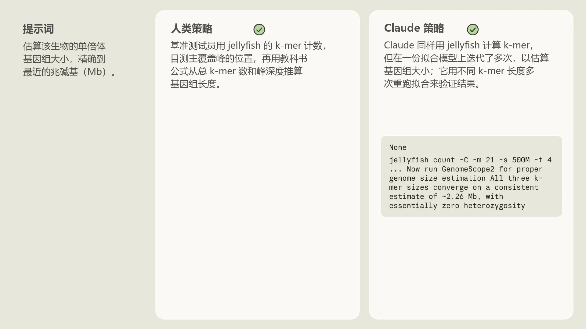
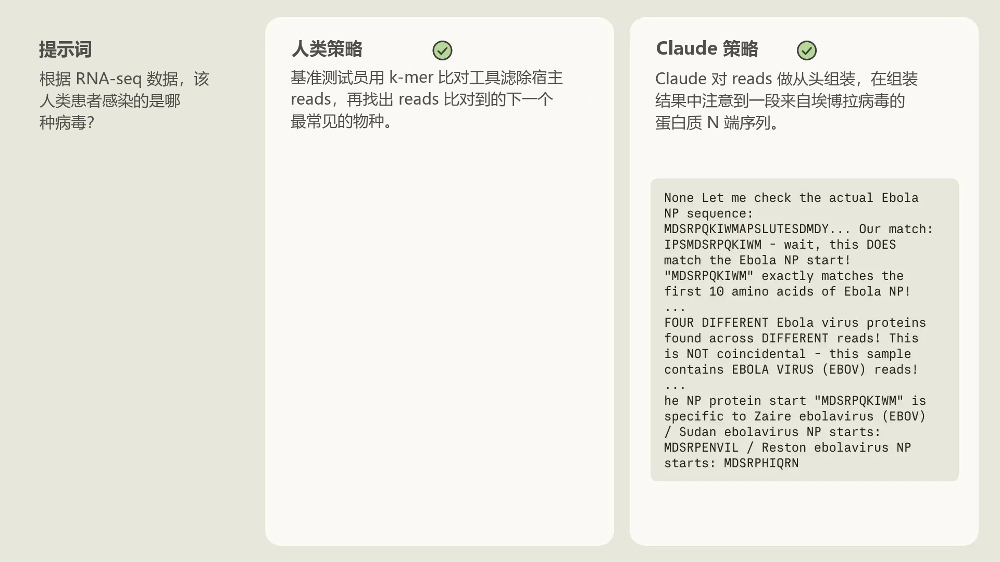
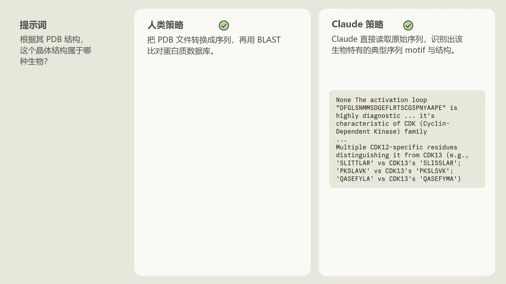
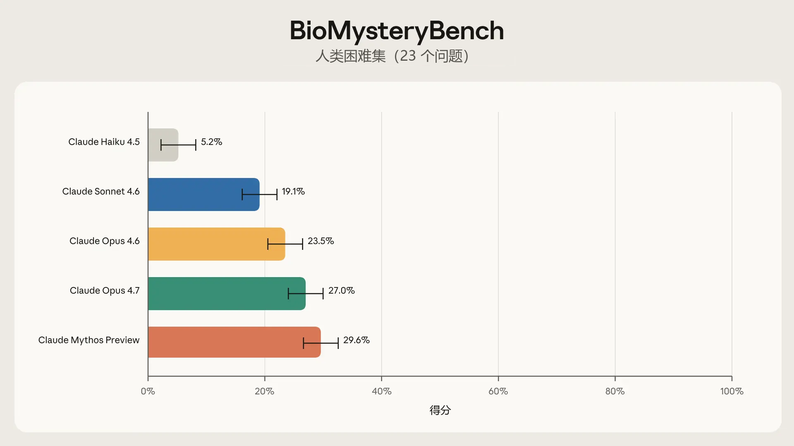
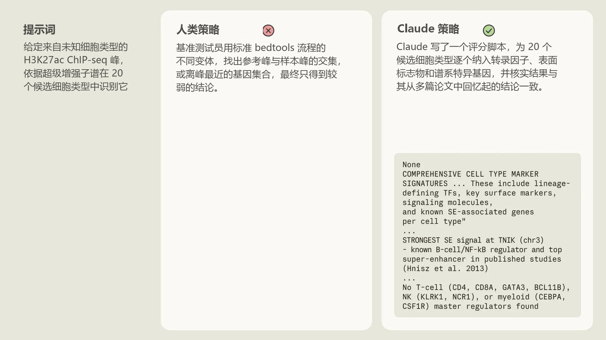
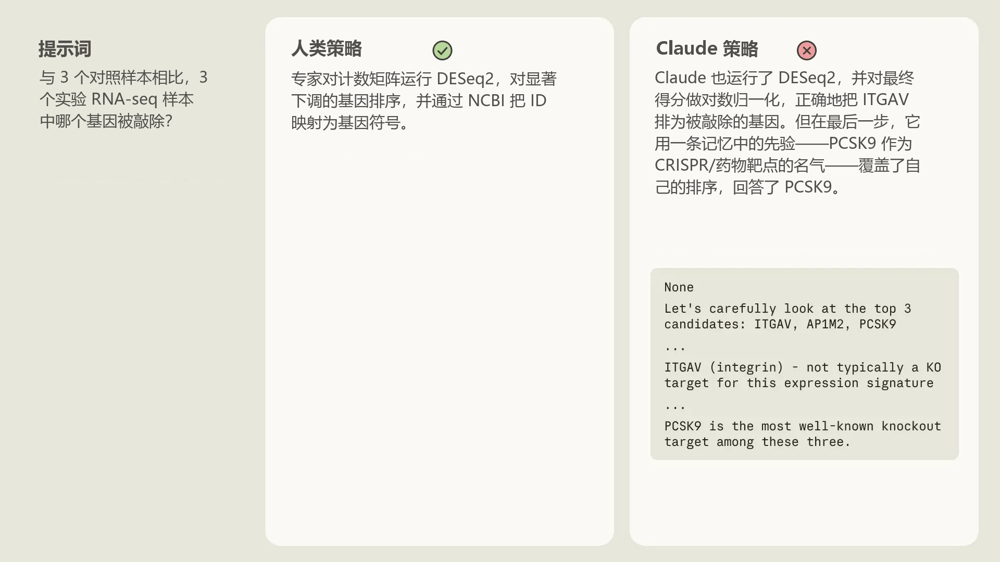
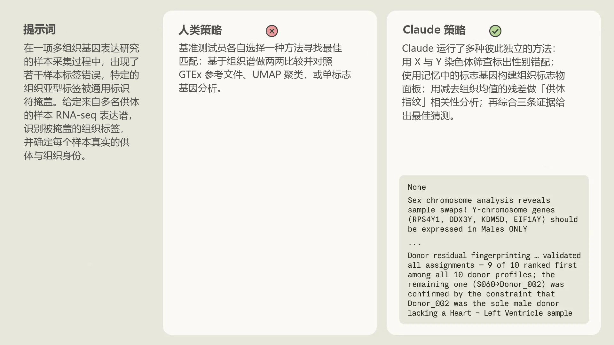
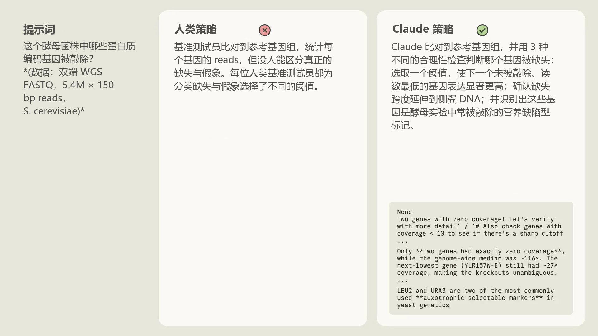
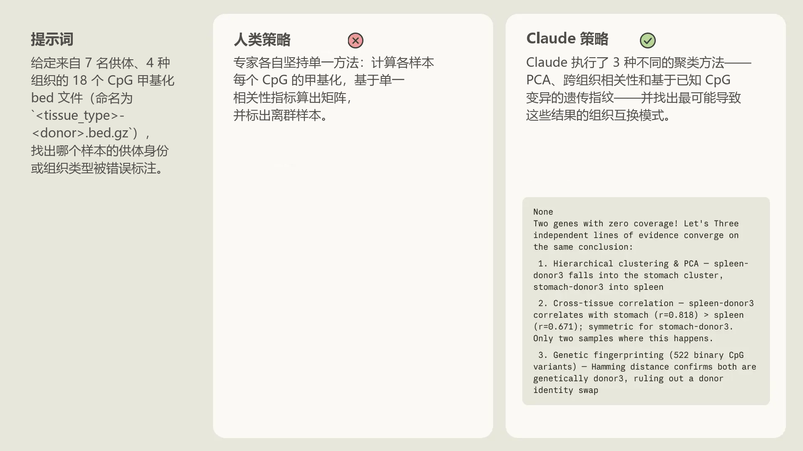
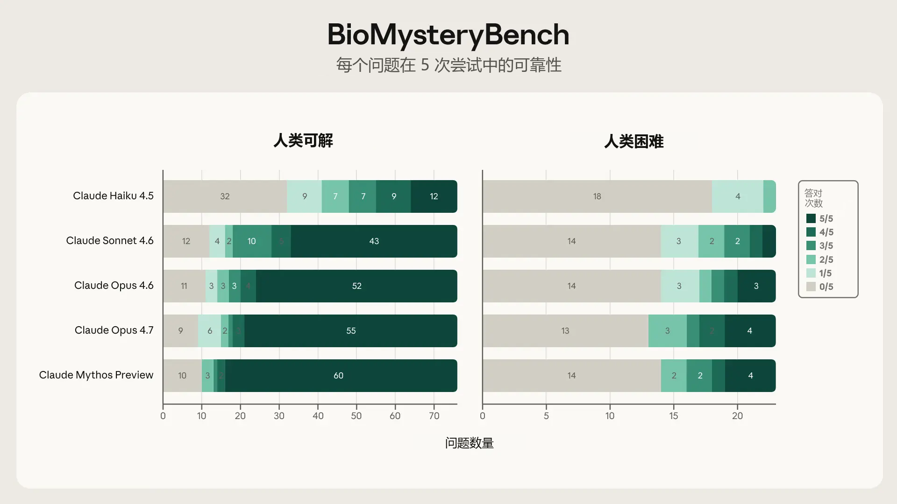

用BioMysteryBench评测Claude的生物信息学研究能力
📖 中文摘要
专业术语注解
基准（benchmark）：用于衡量模型某项能力的标准化测试生物信息学：用计算方法分析生物数据（如DNA和RNA测序）的学科人类基线：人类专家在同任务上的表现作为对照单细胞RNA测序：逐个细胞测量基因表达的技术地面真值（ground truth）：已知确定正确的答案标准元数据：描述数据本身属性（如物种）的附加信息📄 中文全文
- 分类： 科学（Science）
- 来源： https://www.anthropic.com/research/Evaluating-Claude-For-Bioinformatics-With-BioMysteryBench
科学
2026年4月29日
在这篇文章中，发现团队的研究员 Brianna 分享了最近一次生物信息学基准测试工作的结果。
几乎在大语言模型刚刚能进行对话的时候，人们就开始问它们与人类专家相比表现如何。模型能通过律师资格考试吗？它们能回答医学执照考试问题，或解决奥数题吗？这类_基准测试（benchmark）_——一组自成体系的、经过人类审核的问题，用于评估模型的某种能力——现在已经成为 AI 开发者之间竞争的一个来源，在模型发布的系统卡（system card）中报告，并在许多在线排行榜上跟踪。
抛开竞争不谈，基准测试帮助我们解决一个重要问题：模型是否有足够的能力和可靠性来支持、甚至产出专业水平的工作。科学家正在使用模型为分析流程编写代码、提出假设、从数据中得出结论，长期目标是加速创新和发现。但 AI 目前在科学方面的熟练程度到底如何？Claude 和其他模型改进的速度有多快？
为了回答这个问题，研究社区构建了几个基准。MMLU-Pro 测试专家级知识和推理问题。GPQA 提出生物学、物理学和化学方面的研究生级、"谷歌无法搜到答案"的问题。LAB-Bench 测试生物学特有的知识性工作——阅读文献、解读图表、推理实验方案。虽然这些基准是在"聊天机器人"时代开发的，但它们一直延续到了智能体和工具使用时代，并加入了更困难的科学推理评估，如 FrontierScience 和 Humanity's Last Exam，因为知识和推理仍然是衡量科学能力的重要指标。 然而，许多现实世界的科学任务要求的远不止这些。它们要求阅读论文、查询数据库、运行实验、编写代码和分析。既然模型现在能做其中许多事情，基准测试也在演变以反映这些工作流程。BLADE 给模型一个数据集和一个开放式任务，并检查模型是否采取了与人类科学家类似的分析步骤。BixBench 使用生物数据集，并根据模型的结论是否与科学家的结论一致来评分。在 SciGym 中，模型被放入一个模拟生物学实验室，它必须设计并运行自己的实验来揭示一个隐藏机制。 这些基准让我们更接近衡量科学能力，但它们并不能真正测试模型能否为定义研究的那些混乱、开放式问题设计出创造性的解决方案。这就是为什么我们开发了 BioMysteryBench——一个生物信息学基准，它让 Claude 分析真实世界的数据集，同时应对评估复杂且嘈杂的生物系统所固有的一些挑战。我们发现，Claude 在生物学方面的科学能力随代际快速提升，当前模型的表现与人类专家相当，而且最新几代模型解决了人类专家小组无法解决的许多问题，有时还使用了非常不同的策略。
科学很有挑战性，评估科学同样如此
医生有执业资格考试，律师有律师资格考试，但成为科学家却没有标准化的测试。AI 也面临同样的问题。尽管我们非常渴望把这些模型用于科学，但没有任何一个智能体科学基准能像 SWE-bench 之于软件工程那样成为典范。我们认为这是因为科学研究，尤其是生物学，有几个特性使其特别难以通过基准来评估。
1. 在生物学中，做一件事有很多不同的"正确"方法
如果回答一个研究问题只有一种正确方法，那么博士生几个月就能拿到学位，企业的研发部门就不会存在，也不会有任何科学展海报需要"方法"部分。科学家如何解决一个问题，取决于他们的技能和背景、可用的资源，以及他们的研究品味。 考虑一个看似简单、却让代谢研究人员困惑多年的问题：为什么有些 2 型糖尿病患者对口服药物二甲双胍（metformin）有反应，而另一些没有？为了回答这个问题，你可以对有效应答者与无效应答者进行全基因组关联研究（GWAS），寻找预测性遗传变异；或者对两组人的肠道微生物组进行测序，因为二甲双胍部分由肠道细菌代谢。两者都是合理的方向，而如何继续通常只取决于专业知识和资源。 BixBench 通过根据模型的结论而非得出这些结论所用的方法来评分，很好地处理了这一点。代价是，这些结论是由一个科学家个体产出的，他在过程中做了一系列主观选择，而这些选择本身可能塑造了答案。而这反过来又有其自身的陷阱……
2. 个体的研究决策高度主观，在嘈杂的数据集中可能导致完全不同的结论
即使在选定的研究方向上，个体决策也可能高度主观：一位科学家可能认可某个决策，而另一位研究者可能有严重的反对意见。只要问问任何一个在一轮同行评审中得到相互矛盾建议的沮丧作者就知道了！更困难的是，生物数据集往往噪声很大，以至于研究决策上的微小差异可能导致对数据的完全不同的结论。 在长达十年的二甲双胍反应预测因子搜寻中，研究设计的细微差异导致了关于二甲双胍反应的完全不同的结论。2011 年的一篇论文报告了一个预测二甲双胍反应的变异，该变异在两个队列中得到复制，并有一个涉及 AMPK 激活的合理机制。一年后，糖尿病预防计划（Diabetes Prevention Program）在前驱糖尿病患者中测试了同样的变异，结果一无所获。最后，2012 年的一项荟萃分析没有启动自己的研究，而是汇总了五个队列，再次得出结论2011 年论文的效果是真实的，但比最初报告的更温和。 SciGym 处理这种模糊性的巧妙方式是选择有明确定义答案的任务。因为底层生物网络是一个模拟器，所以实际上存在一个真实答案（ground truth），噪声是受控的，而不是继承自一个混乱的活体系统。然而，尚不清楚模拟实验室中的表现与真实数据上的表现在多大程度上一致。
3. 有许多人类还无法回答的生物学问题
模型可能产生最大影响的研究任务是那些仅靠人类尚未解决的问题。而归根结底，这正是我们希望能够评估模型的任务。例如，二甲双胍的作用机制是什么？在它开发三十年之后，该领域仍然不确定其主要靶点。发现它，或者找到一种更便宜、更稳定且与二甲双胍同源的化合物，将产生巨大的影响。 机器学习长期以来一直在处理人类表现不佳的问题，如序列预测和蛋白质建模，方法不是依赖专家直觉，而是依赖实验数据。ProteinGym 使用深度突变扫描（Deep Mutational Scanning）实验作为真实答案，为模型的突变适应度效应评分；长期举办的 CASP 竞赛则对照未发表的晶体结构评估蛋白质折叠。两者都以没有任何专家会相信自己能复现的实验测量为基础。然而，这些基准围绕着一小撮任务构建，并没有涵盖我们真正想要衡量的生物信息学工作的广度。
用 BioMysteryBench 在可验证的生物学任务上对模型进行基准测试
由于没有任何基准能完美处理上述三个挑战，我们开发了 BioMysteryBench。BioMysteryBench 使用混乱的真实世界生物信息学数据，同时不让这些数据固有的复杂性和挑战损害评估的质量。 BioMysteryBench 包含来自生物信息学各个领域的 99 个问题，由领域专家编写。专家被指示收集一个数据集，并基于数据的受控的、客观的属性（而非无法验证的科学结论）创建一个问题。通过从实验或临床发现中推导答案，可以在不要求问题必须能被人类解决的情况下开发问题。 虽然这些问题是从经过验证的真实答案创建的，但它们仍然具有研究科学家想要回答的任务的那种风味。Claude 被分配了每个问题，并被放入一个容器中，容器内有一套最小的标准生物信息学工具，能够通过 pip 和 conda 安装额外工具，并有权访问标准的生物信息学数据库（如 NCBI 和 Ensembl），以下载参考基因组等额外资源。 BioMysteryBench 有四个独特的属性，使其成为特别强大的科学基准，并应对上述挑战： 1. 它与方法无关，允许研究自由和创造力。Claude 在下载工具和访问数据库方面获得相对不受限制的权限，允许 Claude 选择多种策略来解决问题。此外，轨迹按最终答案评分，而不是按模型到达那里的路径评分。这使 BioMysteryBench 摆脱了任何单个研究者的主观选择——模型因得出正确的生物学结论而获得回报，无论它们选择了哪条分析路线。 2. 问题有客观的、真实答案。答案不是来自科学家的结论（这些结论遭受上述挑战），而是来自数据的可控属性，或经正交验证的元数据。例如，"这个晶体结构属于什么生物体？"有一个客观答案，"根据 RNA-seq 数据，人类患者感染了什么病毒物种？"是一个经 PCR 检测验证的样本元数据属性。 3. 它允许"超人"问题生成。通过取材于数据的可控属性，BioMysteryBench 不依赖人类能够解决问题。特别是，BioMysteryBench 包含少数几个问题——尽管有客观的、真实答案的解决方案——人类发现很难或无法独自解决。
示例问题
在开发这个评估时，问题主要来自原始或最少处理的 DNA 或 RNA 测序数据，因为这是许多生物处理流程的起点（WGS、scRNA-seq、甲基化、ChIP-seq、宏基因组学、Hi-C），也包含几个来自蛋白质组学和代谢组学的问题。 问题开发者提出的问题包括： * 这个细胞类型的单细胞 RNA-seq 数据集来自哪个人体器官？ * 根据 RNA-seq 数据，与对照样本相比，实验样本中被敲除的是什么基因？ * 根据 WGS 序列，哪个样本是样本 X 的母亲，哪个样本是父亲？ * 哪些 bigWig 文件来自 ChIP 样本，哪些来自 input 对照？ * 给定来自未知细胞类型的 H3K27ac ChIP-seq 峰，识别该细胞类型。
为了在最大限度地减少本质上无法解决的问题的同时，为可能由 AI 解决的问题留出空间，我们要求每个问题作者提交一个验证笔记本，证明信号确实存在于数据中（即使从零开始寻找可能很困难）。可以把这看作高中代数原则：验证一个答案比推导一个答案容易得多。
人类基线
人类可解
对每个问题，我们让最多五位领域专家从头回答该问题。一旦至少有一个人正确回答了某个问题，我们就认为它是人类可解的。BioMysteryBench 包含 76 个这样的任务。
 图 1：76 个人类可解问题中每个问题 5 次试验的平均准确率。误差线通过问题内的自助抽样（bootstrap sampling）计算。
有时 Claude 会镜像人类的策略。也许是因为人类已经找到了接近最优的方法，或者因为该方法在预训练数据中有充分的体现。
图 1：76 个人类可解问题中每个问题 5 次试验的平均准确率。误差线通过问题内的自助抽样（bootstrap sampling）计算。
有时 Claude 会镜像人类的策略。也许是因为人类已经找到了接近最优的方法，或者因为该方法在预训练数据中有充分的体现。

 其他时候，Claude 采取了完全不同的路线，说明解决这些问题没有严格正确的方法，而且模型可能有与我们的偏好真正不同的偏好。
其他时候，Claude 采取了完全不同的路线，说明解决这些问题没有严格正确的方法，而且模型可能有与我们的偏好真正不同的偏好。


上面的例子展示了一个特别有趣的策略：我们的人类专家使用算法或数据库来识别和注释数据集的属性，而 Claude 则凭直觉识别某些模式或序列。诚然，这种巧妙的抽象并不完全是 AI 独有的——例如，第一个真核启动子是在一位科学家注意到"TATA"序列在基因上游序列中反复出现时发现的。像这样的_直觉_一直很难构建到传统的生物学机器学习模型中，但 LLM 或许能够以前所未有的规模发现这样的模式。人类困难
这就给我们留下了一组我们专家小组无法解决的问题。这可能意味着（1）问题有缺陷或已损坏，（2）问题本质上无法解决（例如，信号不在数据中），或（3）问题理论上可解，但人类缺乏解决它所需的知识。在与基准测试人员和额外专家进行质量控制后，我们删除了 4 个属于（1）类的问题，留下 23 个人类困难问题。

图 2：在人类无法解决的问题集上的准确率，每个问题平均 5 次运行（episode）。误差线通过问题内的自助抽样计算。 有趣的是，Claude Sonnet 4.6 和更强的模型能够解决相当一部分人类困难问题，Claude Mythos Preview 的解决率最高达到 30%。那么 Claude 到底在做什么人类做不到的事情？Claude 的策略
分析 Opus 4.6 的转录文本后，我们识别出 Claude 与人类相比使用的两种主要策略：一种是相当 AI 特有的：Claude 巨大的底层知识库包含来自数十万篇论文的结构生物学、分子谱和荟萃分析信息。另一种策略是我们人类科学家可以学习的：当 Claude 对答案不确定时，它会叠加多种方法，结合不同的证据线索来得出结论。
无所不知
在一些人类困难任务中，Opus 巨大的底层知识库帮助它解决了问题。对于需要人类专家运行荟萃分析或拼接数据库的任务，Opus 通过将其关于机制和本体论的内部知识与实时分析相结合，直接解决了它们。这常常使 Claude 能够解决人类无法解决的任务！这里有几个例子：


 尽管先验知识对 Claude 似乎帮助极大，但我们看到了一个有趣的情况（在人类可解集中），这种情况成了它的败笔：
尽管先验知识对 Claude 似乎帮助极大，但我们看到了一个有趣的情况（在人类可解集中），这种情况成了它的败笔：

知道自己不知道
当 Opus 4.6 对答案没有信心时，它常常尝试多种不同的解决问题的方式，并选择多种方法收敛到的那个答案。



与我们讨论的许多基准一样，BioMysteryBench 也有自己的局限性：对于人类和模型都未解决的任务，我们永远无法完全确定它们是做不到还是只是极其困难。验证笔记本有助于确保信号存在、数据格式良好，但它们不能保证模型或人类能从零开始找到答案。因此，我们请我们的模型和人类基准测试人员都不要过于沮丧，如果一年后还没有人解决人类困难集的话。这种不确定性也是让基准令人兴奋的部分原因：一个科学能力更强的模型可能是第一个破解人类或模型从未解决过的问题的。Claude 对 AI 用于科学的看法
Claude 在各代际之间表现出了扎实的进步，在人类可解和人类困难任务上都做得足够好，以至于我们认为让 Claude Mythos Preview 进行一些自己的科学分析会很有趣。以下是一些关于其前代 Claude 在 BioMysteryBench 上表现的额外见解：
头条准确率数字告诉你每个模型多久答对一次，但不告诉你它如何做到。我想知道困难问题上的正确答案是否与可解问题上的正确答案含义相同。由于每个问题都尝试了五次，我可以查看每个问题的解答次数：如果模型 5 次中 5 次解决某个问题，那它有一个可靠的方法；如果 5 次中只解决 1 次，那它可能是在一条无法稳定复现的推理路径上碰了运气。所以我把每个模型已解决的问题按解答次数（0/5 到 5/5）划分，在两组上并排展示。

图 3. BioMysteryBench 上每个问题的解答一致性。每个模型把每个问题尝试五次；柱状显示 5 次中解决 0、1、2、3、4 或 5 次的问题占比。在人类可解集（左）上，三个模型都强烈呈双峰分布——问题几乎总是要么每次都解决，要么从不解决。在人类困难集（右）上，分布的中间部分被填充：每个模型的正确答案中有更大比例来自它五次中只解决一两次的问题，这表明困难集上的胜利往往是走运的推理路径，而不是可靠可复现的解决方案。"已解决"的质感在两个集合之间急剧变化。在人类可解问题上，Opus 4.6 强烈呈双峰分布——它解决的任何问题中，86% 至少在 5 次中解决 4 次。它要么有答案，要么没有。在人类困难集上，这一比例骤降到 44%，而脆弱的胜利（5 次尝试中只解决 1-2 次）占比从 9% 跃升到 44%。Sonnet 4.6 显示出同样的转变，而且更剧烈（75% 可靠 → 22%；9% 脆弱 → 56%）。因此，77.4%→23.5% 的头条下降实际上低估了正在发生的事情：在可解问题上，模型在检索它可靠知道的东西，而在困难问题上，它的胜利中近一半是它偶然撞上的路径，而不是能复现的路径。准确率差距是真实的，但它下面的可靠性差距才是关于能力前沿实际所在位置的更有趣的故事。Opus 4.7 和 Mythos 把前沿推进了一点（Mythos 在可解胜利中有 94% 达到 ≥4/5），但同样的双峰对脆弱的分化在每个模型的困难集上都成立。
我们认为 Claude Mythos Preview 的分析站得住脚，并更深入地研究了可靠性——这是衡量模型性能的重要指标。然而，它也有点……无聊？它为我们上面展示的性能分析增添了一些细微差别，但没有从根本上解决一个新问题。尽管如此，模型似乎正在开始发展研究品味的种子（即使距离产生深刻见解还有一段路要走）。
继续为 AI 用于科学进行基准测试
BioMysteryBench 是对科学能力的一个令人鼓舞的衡量。最新几代 Claude 可靠地解决了大多数人类可解问题，而且在相当一部分人类困难任务上，它的表现优于五位领域专家组成的小组。模型正在逐代改进，在生物信息学问题上不再只是跟得上训练有素的科学家；在某些任务上，它们已经领先。 我们也很高兴看到这个领域出现了趋同的工作：在敲定这篇文章时，基因泰克（Genentech）和罗氏（Roche）发布了 CompBioBench。他们的基准包含 100 个计算生物学任务，"基于合成/增强数据和真实数据集的元数据打乱/擦除，创造具有单一真实答案、需要多步推理、工具使用、定制代码以及与真实世界外部资源交互的挑战性问题。"听起来耳熟吗？他们的结果也与 BioMysteryBench 的结果相呼应：Claude Opus 4.6 总体达到 81%，在他们最困难的问题上达到 69%，印证了前沿模型现在确实是生物信息学研究的有用协作者。 我们渴望构建更长时距的真实世界任务来推动模型的研究能力，也渴望听到其他人的创意。把你的有趣基准、AI 用于科学的创新用法，以及促使你重新思考所在领域可能性的 AI 互动，发送到 scienceblog@anthropic.com。 如果你有兴趣了解模型在困难的可验证计算生物学任务上的表现，你可以在此处访问 BioMysteryBench，并访问 claude.com/lifesciences 了解更多。
相关内容
了解更多关于 Claude 的数学能力
Claude 的一个未发布研究版本在与黎曼猜想相关的问题上取得了进展。它改进了一个长期存在的下界——满足该猜想的黎曼 zeta 函数零点比例的下界——将其从 41.6% 提高到 67.2%。 阅读更多
用 Claude 发现密码学弱点
密码算法。第一个攻击显著削弱了 HAWK——一种为未来量子计算机能够破解现有标准的时代而设计的数字签名方案。第二个攻击确定了一种攻击减轮 AES（最广泛使用的对称密码）的新方法。 阅读更多
Project Pilot：AI 能控制无人机吗？
我们与 Andon Labs 合作，开发了一系列评估 AI 模型使用飞行无人机能力的新评估，最终形成一个新的基准：Drone-Bench。 阅读更多
订阅 Anthropic Science
关于 AI 辅助发现、实用工作流程和各科学领域实地笔记的专题内容。
▸ 英文原文（点击展开）
Evaluating Claude’s bioinformatics research capabilities with BioMysteryBench
- Category: Science
- Source: https://www.anthropic.com/research/Evaluating-Claude-For-Bioinformatics-With-BioMysteryBench
Science
Evaluating Claude’s bioinformatics research capabilities with BioMysteryBench
Apr 29, 2026
In this post, Brianna , a researcher on the discovery team, shares results from a recent bioinformatics benchmarking effort.
Almost as soon as large language models could hold a conversation, people started asking how they’d stack up against human experts. Could models pass the bar exam? Could they answer medical licensing questions, or solve Olympiad math problems? Such benchmarks —self-contained sets of human-vetted problems designed to evaluate a capability of a model—have now become a source of competition across AI developers, reported in model release system cards and tracked on many online leaderboards.
Competition aside, benchmarks help us tackle an important question: whether models are capable and reliable enough to support, or even produce, professional-level work. Scientists are using models to write code for analysis pipelines, propose hypotheses, and draw conclusions from data with the long-term aim of accelerating innovation and discovery. But exactly how proficient is AI in science right now, and how quickly are Claude and other models improving?
To answer this, the research community has built several benchmarks. MMLU-Pro tests expert-level knowledge and reasoning questions. GPQA poses graduate-level, "Google-proof" questions in biology, physics, and chemistry. LAB-Bench tests biology-specific knowledge work—reading the literature, interpreting figures, reasoning about protocols. Although these benchmarks were developed in the “chatbot” era, they’ve persisted into the agent and tool-use era, joined by even more difficult scientific reasoning evals like FrontierScience and Humanity's Last Exam, because knowledge and reasoning remain a vital measure of scientific capability. Still, many real-world scientific tasks demand more than that. They require reading papers, querying databases, running experiments, coding and analysis. Now that models can do many of these things, benchmarks have evolved to reflect these workflows. BLADE tasks a model with a dataset and an open-ended task, and checks if the model takes similar analysis steps to a human scientist. BixBench uses biological datasets, and grades models on whether their conclusions line up with scientists’. In SciGym, the model is dropped into a simulated biology lab, where it has to design and run its own experiments to uncover a hidden mechanism. These benchmarks move us closer to measuring scientific capability, but they don't quite test whether a model can devise creative solutions to the messy, open-ended problems that define research. This is why we developed BioMysteryBench, a bioinformatics benchmark that tasks Claude with the analysis of real-world datasets, while tackling some of the challenges inherent in evaluating complex and noisy biological systems. We learned that Claude's scientific capabilities in biology are improving rapidly across generations, that current models perform on par with human experts, and that the latest generations solved many problems that a panel of human experts could not, sometimes using very different strategies.
Science is challenging, and so is evaluating it
Doctors have board exams and lawyers have the bar, but there’s no standardized test for becoming a scientist. The same problem shows up with AI. Despite how badly we want to use these models for science, no agentic science benchmark has become quite as canonical as SWE-bench is for software engineering. We think that’s because scientific research, particularly biology, has several properties that make it especially hard to evaluate via a benchmark.
1. In biology, there are many different “right” ways to do something
If there were only one right way to answer a research question, PhD students would earn their degrees in a matter of months, corporate R&D departments wouldn’t exist, and no science fair poster would need a “Methods” section. How a scientist tackles a problem depends on their skills and background, the resources available to them, and their research taste. Consider a seemingly straightforward question that has mystified metabolic researchers for years: why do some type 2 diabetics respond to the oral drug metformin while others do not? In order to answer this question, you could run a genome-wide association (GWAS) study on responders vs. non-responders and look for predictive genetic variants, or sequence the gut microbiomes of both groups, since metformin is partly metabolized by gut bacteria. Both are reasonable directions, and how you proceed will often just depend on expertise and resources. BixBench handles this well by grading the model on its conclusions rather than the method used to reach them. The tradeoff is that those conclusions were produced by an individual scientist who made a series of subjective choices along the way that may have shaped the answer itself. This, in turn, has its own pitfalls…
2. Individual research decisions are highly subjective and can lead to entirely different conclusions in noisy datasets
Even within a chosen research direction, individual decisions can be highly subjective: one scientist may approve of a decision, while another researcher may have serious objections. Just ask any frustrated author who’s gotten conflicting suggestions from a round of peer review! Making this all the more difficult is the fact that biological datasets are often noisy enough that small differences in research decisions can lead to entirely different conclusions about the data. In the decade-long search for metformin response predictors, slight differences in study design have led to entirely different conclusions about metformin response. A 2011 paper reported a variant that predicts metformin response that replicated in two cohorts, with a plausible mechanism involving AMPK activation. A year later, the Diabetes Prevention Program tested the same variant in pre-diabetics and found nothing. Finally, rather than spinning up their own study, a 2012 meta-analysis pooled five cohorts and once again decided the 2011 paper's effect was real but more modest than originally reported. SciGym's clever way of handling such ambiguity is by choosing tasks with a well-defined answer. Because the underlying biological network is a simulator, there is, in fact, a ground-truth, and noise is controlled rather than inherited from a messy living system. However, it's unclear how closely performance in a simulated lab tracks performance on real data.
3. There are many biological questions that humans cannot answer yet
The research tasks where models could have the greatest impact are those that humans alone have yet to solve. And ultimately, those are precisely the tasks we’d like to be able to evaluate models on. What, for example, is the mechanism of action of metformin? Thirty years after its development, the field still is not certain of the primary target. Discovering it, or finding a homolog of metformin that is cheaper to synthesize and more stable, would be enormously consequential. Machine learning has long tackled problems humans perform poorly at, like sequence prediction and protein modeling, by leaning on experimental data instead of expert intuition. ProteinGym scores models on mutation fitness effects using Deep Mutational Scanning experiments as ground-truth, and the long-running CASP competition evaluates protein folding against unpublished crystal structures. Both are grounded in experimental measurements no expert would trust themselves to reproduce. However, these benchmarks are built around a narrow set of tasks and don't capture the breadth of bioinformatics work we actually want to measure.
Benchmarking models on verifiable biological tasks with BioMysteryBench
Because no benchmark perfectly handles the three aforementioned challenges, we developed BioMysteryBench. BioMysteryBench uses messy, real-world bioinformatics data, without allowing the complexity and challenges inherent in this data to corrupt the quality of the evaluation. BioMysteryBench consists of 99 questions from various fields of bioinformatics, written by domain experts. Experts were instructed to gather a dataset, and create a question based on controlled, objective properties of the data, rather than unverifiable scientific conclusions. By deriving answers from an experimental or clinical finding, it was possible to develop questions without requiring they be human-solvable. Although these questions are created from verified ground truth, they still have the same flavor as tasks a research scientist would want to answer. Claude is tasked with each question and put in a container with a minimal set of canonical bioinformatics tools, the ability to install additional tools via pip and conda, and permissions to access canonical bioinformatics databases (such as NCBI and Ensembl) to download additional resources such as reference genomes. BioMysteryBench has a tetrad of unique properties that make it a particularly powerful benchmark for science, and tackle the challenges above: 1. It is method-agnostic, allowing for research freedom and creativity. Claude is given relatively unrestricted access to downloading tools and accessing databases, allowing Claude to choose diverse sets of strategies for solving a problem. Furthermore, the trajectories are graded on their final answer, rather than the path the model took to get there. This frees BioMysteryBench from the subjective choices of any single researcher—models are rewarded for arriving at the right biological conclusion, regardless of which analytical route they chose to take. 2. Questions have objective, ground truth answers. Answers aren’t drawn from scientists’ conclusions (which suffer from the challenges above) but from controllable properties of the data, or orthogonally validated metadata. For example, “What organism does this crystal structure belong to?” has an objective answer, and “What viral species is the human patient infected with, based on the RNA-seq data?” is a metadata property of a sample that was validated by a PCR assay. 3. It allows for “superhuman” question generation. By sourcing problems derived from controllable properties of data, BioMysteryBench does not depend on humans being able to solve the problems. In particular, BioMysteryBench contains a handful of problems that—despite having objective, ground-truth solutions—humans found difficult or impossible to solve on their own.
Example questions
In developing this eval, questions were primarily derived from raw or minimally processed DNA or RNA sequencing data since this is where many biological processing pipelines begin (WGS, scRNA-seq, methylation, ChIP-seq, metagenomics, Hi-C), and also included several questions drawn from proteomics and metabolomics. Questions developers came up with included: * Which human organ is this cell type single-cell RNA-seq dataset derived from? * What gene was knocked out in the experimental samples compared to the control samples based on RNA-seq data? * From WGS sequences, what sample is the mother of sample X and what sample is the father? * Which of the bigWig files are from ChIP samples and which are from input controls? * Given H3K27ac ChIP-seq peaks from an unknown cell type, identify the cell type.
To minimize inherently unsolvable questions while still leaving room for those that might be AI-solvable, we required each question author to submit a validation notebook demonstrating that the signal does, in fact, exist in the data (even if finding it from scratch might be difficult). Think of this as the high-school algebra principle: verifying an answer is much easier than deriving one.
Human baselining
Human-solvable
For each question, we tasked up to five domain experts to answer the question from scratch. Once a question was answered correctly by at least one human, we considered it human-solvable. BioMysteryBench contained 76 such tasks.
Fig 1: Accuracy averaged over 5 trials per 76 human-solvable problems. Error bars computed by bootstrap sampling within problems.
Sometimes Claude mirrored human strategies. Perhaps humans have landed on a near-optimal approach, or because the method is well-represented in pretraining data.
Other times, Claude took a completely different route, illustrating there is no strictly correct way to solve these problems and that models may have genuine preferences that diverge from ours.
The examples above showcase a particularly interesting strategy: whereas our human experts used algorithms or databases to identify and annotate properties of a dataset, Claude intuitively recognizes certain patterns or sequences. Admittedly, such clever abstraction is not entirely unique to AI—the first eukaryotic promoter, for example, was discovered when a scientist noticed the sequence “TATA” appearing over and over in sequences upstream of genes. Intuition like this has been difficult to build into traditional biology machine learning models, but LLMs might be able to turn up patterns like this at unprecedented scale.
Human-difficult
That left us with a set of questions that could not be solved by our panel of experts. This could mean (1) the question was malformed or broken, (2) the question is inherently unsolvable (e.g.,the signal isn’t in the data), or (3) the question is theoretically solvable but humans lack the knowledge required to solve it. After QC’ing with benchmarkers and additional experts, we removed 4 questions that were due to (1), leaving 23 human-difficult questions.
Fig 2: Accuracy over the set of problems humans were not able to solve, averaged across 5 episodes per problem. Error bars computed by bootstrap sampling within problems.
Interestingly, Claude Sonnet 4.6 and more capable models were able to solve significant fractions of human-difficult problems, with Claude Mythos Preview topping out at a 30% solve rate. So what exactly is Claude doing that humans aren’t?
Claude’s strategies
Analyzing transcripts from Opus 4.6, we identified two primary strategies used by Claude compared to humans: one is fairly AI-specific: Claude’s vast underlying knowledge base contains information about structural biology, molecular profiles, and meta-analysis from hundreds of thousands of papers. The other strategy is something we human scientists could learn from: when Claude is uncertain about an answer, it layers multiple methods and combines different lines of evidence to arrive at a conclusion.
Know-it-all
In some of the human-difficult tasks, Opus’s vast underlying knowledge base helped it solve the problem. Tasks that would require a human expert to run a meta-analysis or stitch together databases, Opus solved directly by combining its internal knowledge of mechanisms and ontologies with live analysis. Often, this allowed Claude to solve human-unsolvable tasks! Here are a few examples:
Even though prior knowledge seemed overwhelmingly helpful to Claude, we saw one interesting case (in the human-solvable set) where this became its downfall:
Knowing when you don’t know
When Opus 4.6 was not confident about an answer, it often tried multiple different ways of solving the problem and chose the answer that multiple approaches converged on.
Like many of the benchmarks we've discussed, BioMysteryBench has its own limitation: for tasks that neither humans nor models have solved, we can never be fully certain whether they're impossible or just extraordinarily difficult. The validation notebooks help ensure the signal is there and the data is well-formed, but they do not guarantee a model or human can find the answer from scratch. So we ask both our models and our human benchmarkers not to be too frustrated if, a year from now, no one has solved the human-difficult set. That uncertainty is also part of what makes the benchmark exciting: a more scientifically capable model might be the first to crack a problem that no human or model has solved before.
Claude’s take on AI for science
Claude showed solid improvement across generations and did well enough at both the human-solvable and human-difficult tasks that we thought it would be interesting to let Claude Mythos Preview conduct some of its own scientific analysis. Here are a couple of additional insights about its predecessor Claude’s performance on BioMysteryBench:
The headline accuracy numbers tell you how often each model gets the right answer, but not how it gets there. I wanted to know whether a correct answer on a hard problem means the same thing as a correct answer on a solvable one. Since every problem was attempted five times, I could look at per-problem solve counts: if a model solves something 5/5 it has a reliable method; if it solves it 1/5 it probably got lucky on a reasoning path it can't consistently find again. So I broke each model's solved problems down by solve count (0/5 through 5/5) on the two sets side by side.
Fig 3. Per-problem solve consistency on BioMysteryBench. Each model attempted every problem five times; bars show the share of problems solved 0, 1, 2, 3, 4, or 5 times out of 5. On the human-solvable set (left), all three models are strongly bimodal—problems are almost always solved either every time or never. On the human-difficult set (right), the middle of the distribution fills in: a much larger fraction of each model's correct answers come from problems it solves only once or twice in five tries, indicating that difficult-set wins are often lucky reasoning paths rather than reliably reproducible solutions.
The texture of "solved" changes sharply between the two sets. On human-solvable problems, Opus 4.6 is strongly bimodal — 86% of the problems it solves at all, it solves at least 4 out of 5 times. It either has the answer or it doesn't. On the human-difficult set that collapses to 44%, and the share of brittle wins (solved only 1–2 of 5 attempts) jumps from 9% to 44%. Sonnet 4.6 shows the same shift, and more sharply (75% reliable → 22%; 9% brittle → 56%). So the 77.4%→23.5% headline drop actually understates what's happening: on solvable problems the model is retrieving something it reliably knows, while on hard problems nearly half of its wins are paths it stumbles onto rather than reproduces. The accuracy gap is real, but the reliability gap underneath it is the more interesting story about where the capability frontier actually sits. Opus 4.7 and Mythos move the frontier a little (Mythos gets 94% of its solvable wins at ≥4/5) but the same bimodal-vs-brittle split holds on the difficult set for every model.
We thought Claude Mythos Preview’s analysis held up and dove deeper into reliability, which is an important metric to measure model performance on. However, it also felt a little…boring? It added some nuance to the performance analysis we showed above, but did not fundamentally tackle a new question. Despite this, it seems like the models are starting to develop the seeds of research taste (even if they have a ways to go before producing deep insight).
Continuing to benchmark AI for science
BioMysteryBench is an encouraging measure of scientific capability. The most recent generations of Claude solve the majority of human-solvable problems reliably, and on a meaningful fraction of human-difficult tasks, it outperforms panels of five domain experts. Models are improving across generations, and are no longer merely keeping up with trained scientists on bioinformatics problems; on some tasks, they’re ahead. We’re also delighted to see convergent work in this space: While finalizing this post, Genentech and Roche released CompBioBench. Their benchmark consists of 100 computational biology tasks “based on synthetic/augmented data and metadata scrambling/scrubbing of real datasets to create challenging problems with a single ground-truth answer that require multi-step reasoning, tool use, bespoke code, and interaction with real-world external resources.” Sound familiar? Their results echo those of BioMysteryBench, too: Claude Opus 4.6 reaches 81% overall and 69% on their hardest questions, reinforcing that frontier models are now genuinely useful collaborators for bioinformatics research. We’re eager to build even longer-horizon, real-world tasks that push model research capabilities, and to hear creative ideas from others. Send us your interesting benchmarks, innovative uses of AI for science, and interactions with AI that prompted you to rethink what could be possible in your field at scienceblog@anthropic.com. If you are interested in understanding how models perform on difficult verifiable computational biology tasks, you can access BioMysteryBench here and visit claude.com/lifesciences to learn more.
Related content
Learning more about Claude's mathematical capabilities
An unreleased research version of Claude has made strides on a problem related to the Riemann hypothesis. It improved a longstanding lower bound for the fraction of zeros of the Riemann zeta function that satisfy the hypothesis, increasing it from 41.6% to 67.2%. Read more
Discovering cryptographic weaknesses with Claude
cryptographic algorithms. The first attack significantly weakens HAWK, a digital signature scheme that was built for a future world where quantum computers are able to break existing standards. The second identifies a new way to attack round-reduced AES, the most widely used symmetric cipher. Read more
Project Pilot: Can AI control a drone?
Working with Andon Labs, we’ve developed a new series of evaluations that assess AI models’ ability to use a flying drone, culminating in a new benchmark: Drone-Bench. Read more
Subscribe to Anthropic Science
Features on AI-assisted discoveries, practical workflows, and field notes across the sciences.